Estimated time needed: 20 minutes
After completing this lab you will be able to:
Skills Network Cloud IDE (based on Theia and Docker) provides an environment for hands on labs for course and project related labs. Theia is an open source IDE (Integrated Development Environment), that can be run on desktop or on the cloud. to complete this lab, we will be using the Cloud IDE based on Theia running in a Docker container.
Please be aware that sessions for this lab environment are not persistent. A new environment is created for you every time you connect to this lab. Any data you may have saved in an earlier session will get lost. To avoid losing your data, please plan to complete these labs in a single session.
Step 1.1. Open a new terminal by clicking on the menu bar and selecting Terminal->New Terminal, as shown in the image below.

This will open a new terminal at the bottom of the screen.

Run the commands below on the newly opened terminal. (You can copy the code by clicking on the little copy button on the bottom right of the codeblock below and then paste it, wherever you wish.)
Start Apache Airflow in the lab environment.
ebnf
start_airflow
Please be patient, it will take a few minutes for airflow to get started.
When airflow starts successfully, you should see an output similar to the one below:
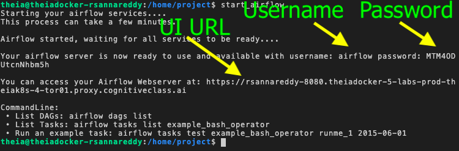
Step 1.2. Open the Airflow Web UI
Copy the Web-UI URL and paste it on a new browser tab. Or your can click on the URL by holding the control key (Command key in case of a Mac).
You should land at a page that looks like this:

For the purpose of monitoring, let's create a dummy DAG with three tasks.
Task1 does nothing but sleep for 1 second.
Task2 sleeps for 2 seconds.
Task3 sleeps for 3 seconds.
This DAG is scheduled to run every 1 minute.
Step 2.1. Using Menu->File->New File create a new file named dummy_dag.py.
Step 2.2. Copy and paste the code below into it and save the file.
routeros
# import the libraries
from datetime import timedelta
# The DAG object; we'll need this to instantiate a DAG
from airflow import DAG
# Operators; we need this to write tasks!
from airflow.operators.bash_operator import BashOperator
# This makes scheduling easy
from airflow.utils.dates import days_ago
#defining DAG arguments
# You can override them on a per-task basis during operator initialization
default_args = {
'owner': 'Ramesh Sannareddy',
'start_date': days_ago(0),
'email': ['ramesh@somemail.com'],
'email_on_failure': False,
'email_on_retry': False,
'retries': 1,
'retry_delay': timedelta(minutes=5),
}
# defining the DAG
dag = DAG(
'dummy_dag',
default_args=default_args,
description='My first DAG',
schedule_interval=timedelta(minutes=1),
)
# define the tasks
# define the first task
task1 = BashOperator(
task_id='task1',
bash_command='sleep 1',
dag=dag,
)
# define the second task
task2 = BashOperator(
task_id='task2',
bash_command='sleep 2',
dag=dag,
)
# define the third task
task3 = BashOperator(
task_id='task3',
bash_command='sleep 3',
dag=dag,
)
# task pipeline
task1 >> task2 >> task3
Submitting a DAG is as simple as copying the DAG python file into dags folder in the AIRFLOW_HOME directory.
Step 2.3. Open a terminal and run the command below to submit the DAG that was created in the previous exercise.
powershell
cp dummy_dag.py $AIRFLOW_HOME/dags
Step 2.4. Verify that our DAG actually got submitted.
Run the command below to list out all the existing DAGs.
ebnf
airflow dags list
Verify that dummy_dag is a part of the output.
Step 2.5. Run the command below to list out all the tasks in dummy_dag.
ebnf
airflow tasks list dummy_dag
You should see 3 tasks in the output.
In the Web-UI, identify the Search DAGs text box as shown in the image below.
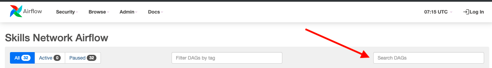
Type dummy_dag in the text box and press enter.
Note: It may take a couple of minutes for the dag to appear here. If you do not see your DAG, please give it a minute and try again.
You should see the dummy_dag listed as seen in the image below:
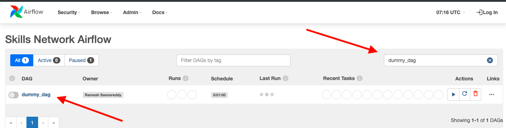
Unpause the DAG using the Pause/Unpause button.
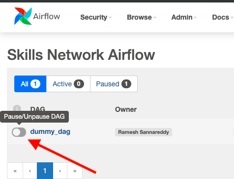
You should see the status as shown in the image below after you unpause the DAG.
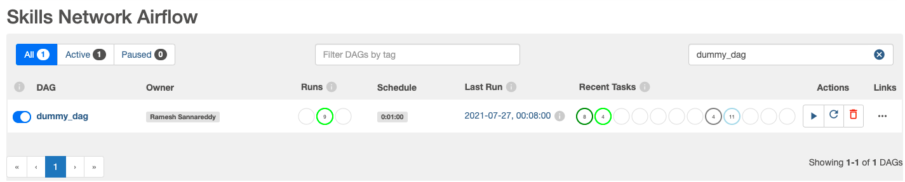
You can see the following details in this view.
Click on the DAG name as shown in the image below to see the detailed view of the DAG.
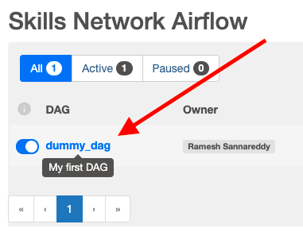
You will land a page that looks like this.
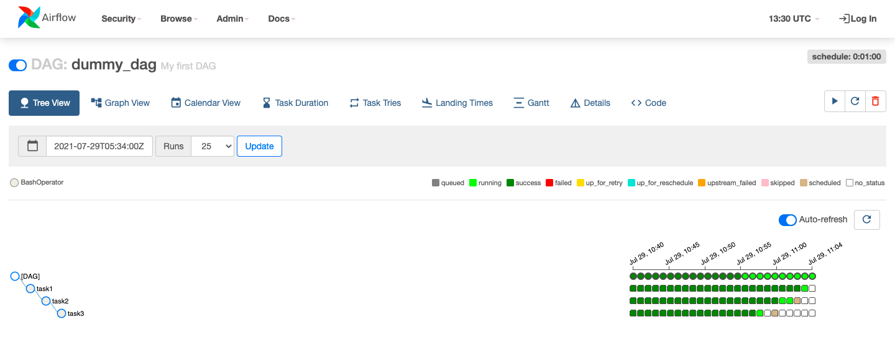
Click on the Tree View button to open the Tree view.
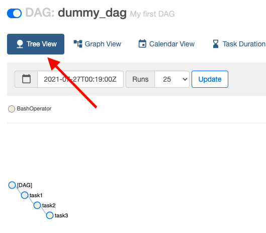
Click on the Auto Refresh button to switch on the auto refresh feature.
The tree view shows your DAG tasks in the form of a tree as seen in the image above.
It also shows the DAG run and task run status as seen below.
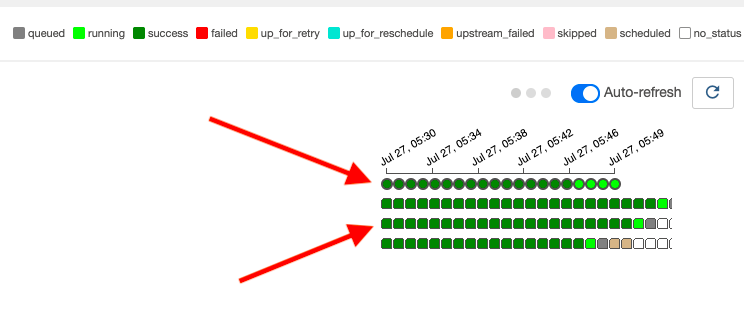
The circles in the image below represent a single DAG run and the color indicates the status of the DAG run. Place your mouse on any circle to see the details.

The squares in the image below represent a single task within a DAG run and the color indicates its status. Place your mouse on any square to see the task details.
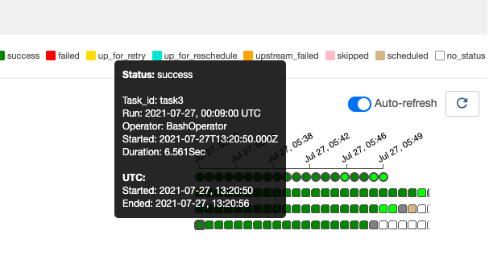
Click on the Graph View button to open the graph view.
Click on the Auto Refresh button to switch on the auto refresh feature.
The graph view shows the tasks in a form of a graph. With the auto refresh on, each task status is also indicated with the color code.
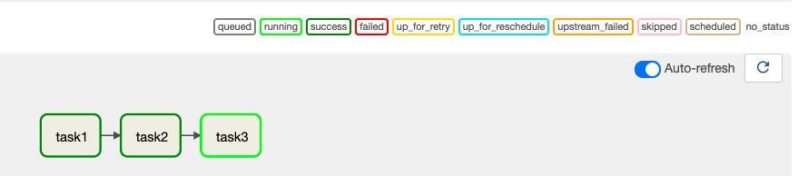
The calender view gives you an overview of all the dates when this DAG was run along with its status as a color code.
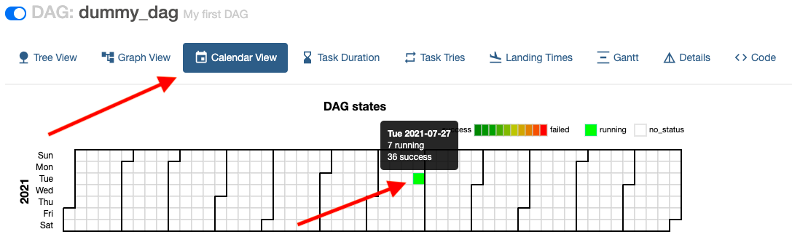
The Task Duration view gives you an overview of how much time each task took to execute, over a period of time.
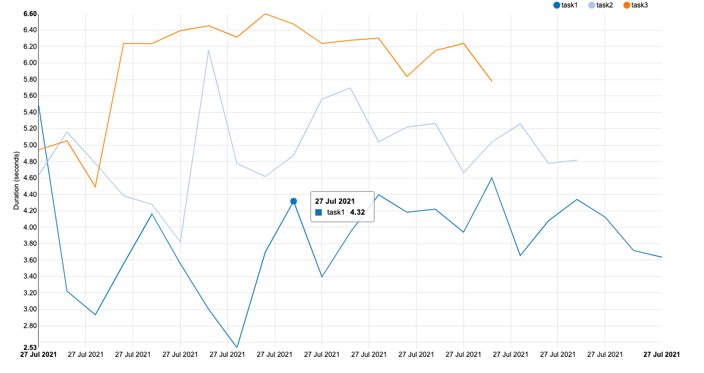
The Details view give you all the details of the DAG as specified in the code of the DAG.
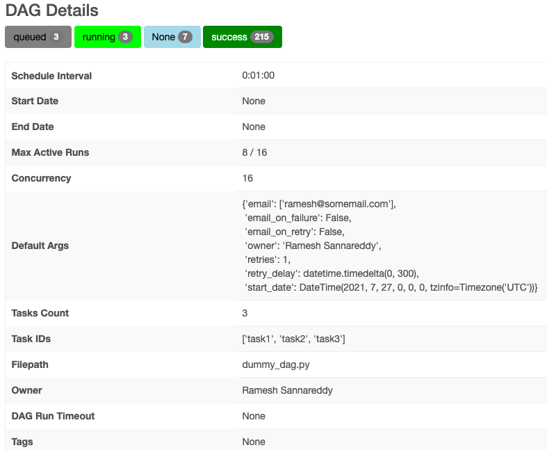
The Code view lets you view the code of the DAG.
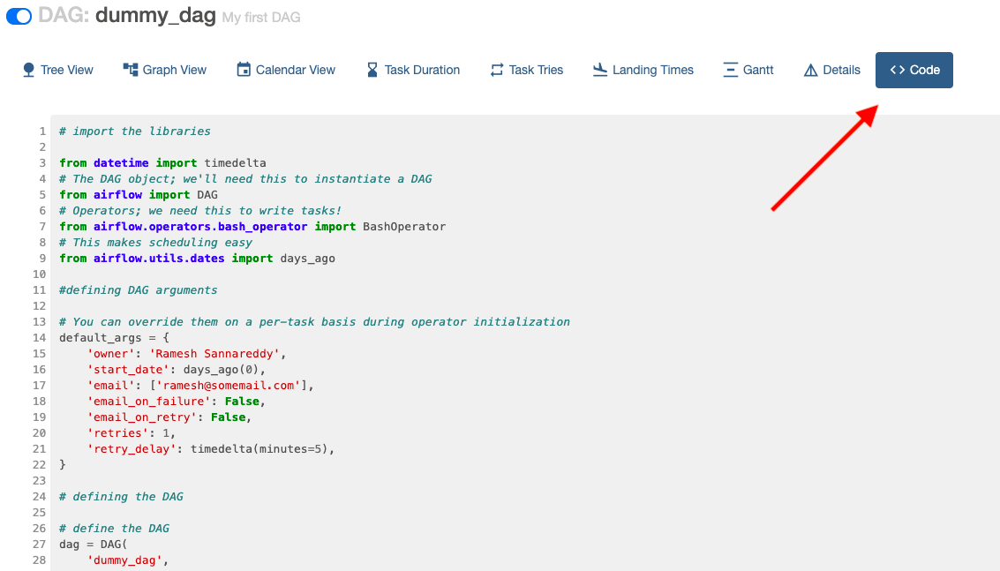
To delete a DAG click on the delete button.
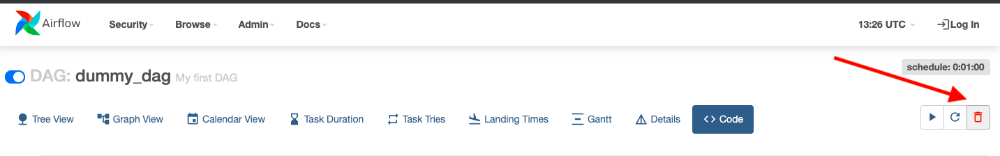
You will get a confirmation pop up as shown in the image below. Click OK to delete the DAG.
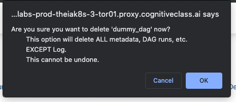
Unpause any existing DAG and monitor it.
Ramesh Sannareddy
Rav Ahuja
| Date (YYYY-MM-DD) | Version | Changed By | Change Description |
|---|---|---|---|
| 2021-07-05 | 0.1 | Ramesh Sannareddy | Created initial version of the lab |
Copyright (c) 2021 IBM Corporation. All rights reserved.